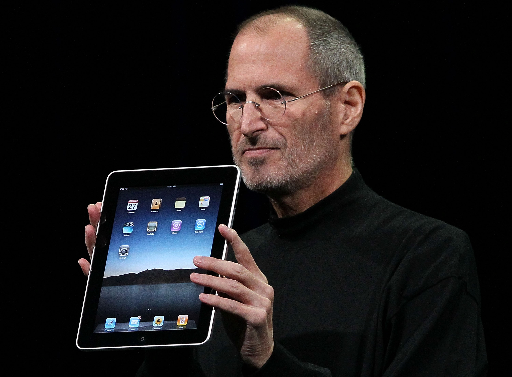

Steven Paul Jobs was an American inventor, designer and entrepreneur who was the co-founder, chief executive and chairman of Apple Computer. Apple's revolutionary products, which include the iPod, iPhone and iPad, are now seen as dictating the evolution of modern technology.
Born in 1955 to two University of Wisconsin graduate students who gave him up for adoption, Jobs was smart but directionless, dropping out of college and experimenting with different pursuits before co-founding Apple with Steve Wozniak in 1976. Jobs left the company in 1985, launching Pixar Animation Studios, then returned to Apple more than a decade later. Jobs died in 2011 following a long battle with pancreatic cancer.
While Jobs was always an intelligent and innovative thinker, his youth was riddled with frustrations over formal schooling. Jobs was a prankster in elementary school due to boredom, and his fourth-grade teacher needed to bribe him to study. Jobs tested so well, however, that administrators wanted to skip him ahead to high school — a proposal that his parents declined.
After high school, Jobs enrolled at Reed College in Portland, Oregon. Lacking direction, he dropped out of college after six months and spent the next 18 months dropping in on creative classes at the school. Jobs later recounted how one course in calligraphy developed his love of typography.
In 1974, Jobs took a position as a video game designer with Atari. Several months later he left the company to find spiritual enlightenment in India, traveling further and experimenting with psychedelic drugs.
In 1976, when Jobs was just 21, he and Wozniak started Apple Computer in the Jobs’ family garage. They funded their entrepreneurial venture by Jobs selling his Volkswagen bus and Wozniak selling his beloved scientific calculator. Jobs and Wozniak are credited with revolutionizing the computer industry with Apple by democratizing the technology and making machines smaller, cheaper, intuitive and accessible to everyday consumers.
Wozniak conceived of a series of user-friendly personal computers, and — with Jobs in charge of marketing — Apple initially marketed the computers for $666.66 each. The Apple I earned the corporation around $774,000. Three years after the release of Apple's second model, the Apple II, the company's sales increased by 700 percent to $139 million.
In 1980, Apple Computer became a publicly-traded company, with a market value of $1.2 billion by the end of its very first day of trading. Jobs looked to marketing expert John Sculley of Pepsi-Cola to take over the role of CEO for Apple.
The next several products from Apple suffered significant design flaws, however, resulting in recalls and consumer disappointment. IBM suddenly surpassed Apple in sales, and Apple had to compete with an IBM/PC-dominated business world.
In 1984, Apple released the Macintosh, marketing the computer as a piece of a counterculture lifestyle: romantic, youthful, creative. But despite positive sales and performance superior to IBM's PCs, the Macintosh was still not IBM-compatible
Sculley believed Jobs was hurting Apple, and the company's executives began to phase him out. Not actually having had an official title with the company he co-founded, Jobs was pushed into a more marginalized position and thus left Apple in 1985.
In 1986, Jobs purchased an animation company from George Lucas, which later became Pixar Animation Studios. Believing in Pixar's potential, Jobs initially invested $50 million of his own money in the company.
The studio went on to produce wildly popular movies such as Toy Story, Finding Nemo and The Incredibles; Pixar's films have collectively netted $4 billion. The studio merged with Walt Disney in 2006, making Jobs Disney's largest shareholder.
In 2011, Forbes estimated the majority of Jobs’ net worth at around $6.5 billion to $7 billion from his sale of Pixar to the Walt Disney Company in 2006. However if Jobs had not sold his Apple shares in 1985, when he left the company he founded and helmed for over a decade, his net worth would have been a staggering $36 billion.
In 2003, Jobs discovered that he had a neuroendocrine tumor, a rare but operable form of pancreatic cancer. Instead of immediately opting for surgery, Jobs chose to alter his pesco-vegetarian diet while weighing Eastern treatment options.
For nine months, Jobs postponed surgery, making Apple's board of directors nervous. Executives feared that shareholders would pull their stock if word got out that their CEO was ill. But in the end, Jobs' confidentiality took precedence over shareholder disclosure.
In 2004, Jobs had successful surgery to remove the pancreatic tumor. True to form, in subsequent years Jobs disclosed little about his health.
Early in 2009, reports circulated about Jobs' weight loss, some predicting his health issues had returned, which included a liver transplant. Jobs responded to these concerns by stating he was dealing with a hormone imbalance. Days later, he went on a six-month leave of absence.